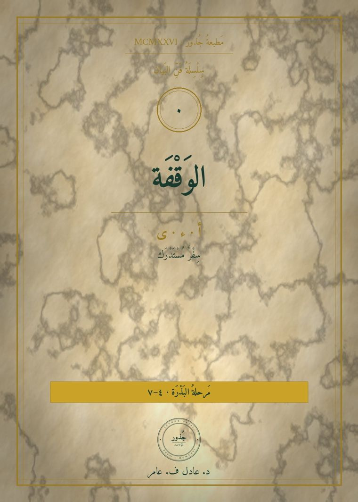
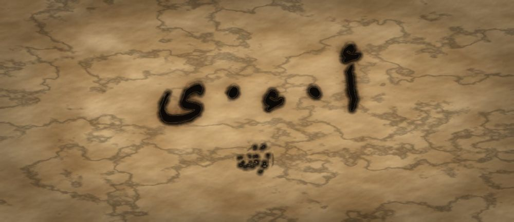

مَطبعةُ جُذور · دبي · MCMXXVI

سِفْرٌ مُسْتَدْرَك · مَقامُ الأدنى · الفئة ٤–٧
❦ ✦ ❧
سِفْرُ الوَقْفَة
أ · ء · ى · الحَرْفُ الذي يَحْبِسُ الهَوَاءَ ثُمَّ يُطْلِقُهُ

لِمَ هذا السِّفر
ثلاثةُ رُسومٍ يظنُّها الطفلُ حرفًا واحدًا، وهي ثلاثةُ أشياءَ مختلفة: هَمْزةٌ تُوقِفُ الهواءَ في الحنجرة، وألِفٌ لا صوتَ لها وحدَها إنّما تَمُدُّ ما قبلَها، وألِفٌ مقصورةٌ تُكتَبُ ياءً وتُنطَقُ ألِفًا. وخلطُ هذه الثلاثةِ أوّلُ ما يَعثُرُ فيه القارئُ المبتدئ.
المَحَطَّات
ء الهَمْزَة
| المَخْرَج | أقصى الحلق · الحنجرة |
|---|---|
| الصِّفَة | شديدةٌ، ينقطعُ معها جريانُ الهواءِ انقطاعًا تامًّا |
| الثُّنَائِيُّ الأَصْغَر | الهمزةُ تَقْطَع، والمدُّ يَصِل. قُلْ «سَأَلَ» ثم «سَالَ»، الأولى فيها بابٌ يُغلَق، والثانيةُ ماءٌ يجري. |
المِرْسَاةُ الحِسِّيَّة · ضعْ كفَّك على حنجرتِك وقلْ: «أَ… أَ… أَ». تُحِسُّ بابًا يُغلَقُ ثم يُفتَحُ في كلِّ مرّة. ثم قلْ «آ» ممدودةً بلا قطعٍ، البابُ مفتوحٌ لا يُغلَق.
كَلِمَاتٌ · أَبٌ · أُمٌّ · سَأَلَ · قَرَأَ · بِئْرٌ
ا الأَلِفُ المَدِّيَّة
| المَخْرَج | جوفُ الفمِ والحلق · لا مخرجَ لها محدَّد |
|---|---|
| الصِّفَة | مدّيّةٌ ساكنةٌ أبدًا، لا تَقبَلُ حركةً، ولا تكونُ أوّلَ الكلمةِ في النطق. والألِفُ المكتوبةُ أوّلَ «ابنٍ» و«الكتاب» همزةُ وصلٍ لا ألِفُ مدٍّ، وهي تُكتَبُ ألِفًا ولا تُنطَقُ إلا ابتداءً |
| الثُّنَائِيُّ الأَصْغَر | «بَ» نقطةٌ، و«بَا» خطٌّ. اضربْ بأصبعِك نقرةً واحدةً للأولى، وامسحْ بأصبعِك خطًّا للثانية. |
المِرْسَاةُ الحِسِّيَّة · مُدَّ خيطًا بين كفَّيك وقلْ «بَاااا» ما دام الخيطُ مشدودًا. حين يَرتخي الخيطُ ينقطعُ الصوت. الألِفُ طولُ الخيطِ لا عُقدةٌ فيه.
كَلِمَاتٌ · بَابٌ · مَالٌ · نَارٌ · سَارَ · قَالَ
ى الأَلِفُ المَقْصُورَة
| المَخْرَج | كالألِف · تُنطَقُ ألِفًا وإن كُتِبَتْ ياءً |
|---|---|
| الصِّفَة | رَسْمٌ مخالفٌ للنطق: تُرسَمُ ياءً بلا نقطتين، وتُقرَأُ ألِفًا |
| الثُّنَائِيُّ الأَصْغَر | «فِي» ياءٌ تُسمَع، و«إِلى» ألِفٌ تُسمَعُ وياءٌ تُرى. ضعْ كفَّك على فمِك: في الأولى ينضمُّ الفمُ قليلًا، وفي الثانيةِ ينفتحُ. |
المِرْسَاةُ الحِسِّيَّة · اكتُبْ «رَمَى» في الرمل، ثم انطقْها، ثم اكتُبْ ما سمعتَه حرفًا بحرف: «رَمَا». عينُك رأت ياءً وأذنُك سمعت ألِفًا. وكتابةُ «رَمَا» هنا مِرآةٌ للصوتِ وليست هجاءً صحيحًا، والصحيحُ «رَمَى». هذا أوّلُ درسٍ في أنّ الرسمَ ليس هو الصوت.
كَلِمَاتٌ · عَلَى · إِلَى · رَمَى · مَتَى · الفَتَى
كُرْسِيُّ الهَمْزَة
الهمزةُ صوتٌ واحدٌ، لكنَّها تُرسَمُ على أشكالٍ بحسبِ ما حولَها. على ألِفٍ: «أَبٌ» و«قَرَأَ». على واوٍ: «سُؤَالٌ». على نبرةٍ (ياءٍ بلا نقطتين): «بِئْرٌ». وعلى السطرِ وحدَها: «سَمَاءٌ». لا يُطلَبُ من الطفلِ حفظُ قواعدِ الكرسيِّ هنا. يكفيه أن يَسمعَ الصوتَ نفسَه في الأشكالِ كلِّها ويُشيرَ إليه.
حَاشِيَةُ التَّرْتِيب
لِمَ صار هذا السِّفرُ الصفرَ لا الأوّل: لأنّ الهمزةَ والألِفَ يَسبِقانِ كلَّ صائتٍ ممدود، ولأنّ أربعةً من الأسفارِ التاليةِ كانت تُحيلُ إليه ولم يكن موجودًا. فأُلحِقَ بالسلسلةِ سِفرًا صفريًّا يُقرأُ قبلَ «أصواتِ المدّ» ولا يُخِلُّ بترقيمِ ما بعدَه.

مَطبعةُ جُذور · دبي · MCMXXVI · صمّمه وطوّره د. عادل ف. عامر
Designed and developed by Dr. Adel F. Amer · Amer (2024) · All rights reserved
↤ سُلَّمُ الحُروفِ الواحد